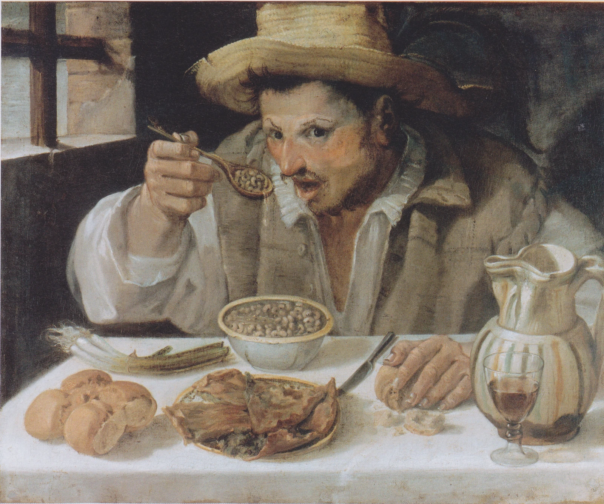

Forbes Italia
Next LeadersBAINSA: a student-run AI research lab
An interview with Lorenzo Caputi and me about building BAINSA and opening research opportunities to undergraduate students.

Forbes Italia
Next LeadersAn interview with Lorenzo Caputi and me about building BAINSA and opening research opportunities to undergraduate students.
Corriere Adriatico
A profile of my path to Harvard and my research on AI and human perception.